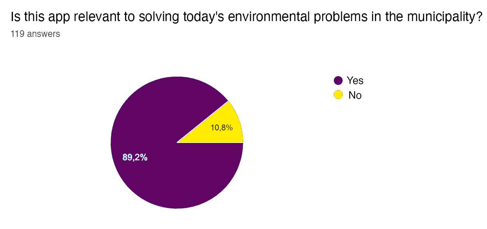

Problem
Have you ever asked yourself how you could make an impact on the world? Imagine having the opportunity to direct positive influence on the local community by doing small, but notable actions on a weekly basis. Currently, more and more people has become aware of the negative effects littering has on the planet – both on a local and global level. Climate change has become the biggest environmental challenge of our generation.
It can be hard to know how one can contribute to the green movement. There exists a myriad of different eco-friendly actions that could be implemented in one’s daily routine. Where does one begin? Is there a way to make it easier and fun for the local community to participate in recycling for the sake of our environment?
Target group:
We want to target every single induvial to actively be engaged in recycling trash in their communities. From the people who see garbage laying on the ground to those that simply throws their trash at the end of their day. Primarily we want out solution to give people a purpose or an idea to a positive system that rewards them for taking care of their communities.
Where do we meet the problems?
Many of us tend to become passive about these types of issues because we do not feel like our contributions matter. This can result in diffusion of responsibility, as we believe that other people will do the job.
Technological or social problems:
Our problem is visible on media outlets all over the world. It is a known fact that climate change is a real and urgent threat. The problem is how we as individuals can help contribute to an eco-friendlier environment. One often must search through multiple articles and use a lot of time trying to find information about this problem. This time-consuming process ends up becoming demotivating and uninteresting.
Why is the problem relevant?
“Climate change presents the single biggest threat to development”, according to UN. Seeing as people have different levels of competence, it is vital for us that our app targets everyone. We have people who have knowledge of recycling but lack the motivation to do the task. Then there are those that doesn’t possess that knowledge. We also have people who frankly do not care about the environment. This application needed to become a common ground for everyone in our communities.
“Great things are done by a series of small things brought together” - Vincent Van Gogh

According to the survey, it shows that generally most young people are concerned with the current state of the global environment. They want more innovate solutions to further diminish the environment problems in both the communities and the world.